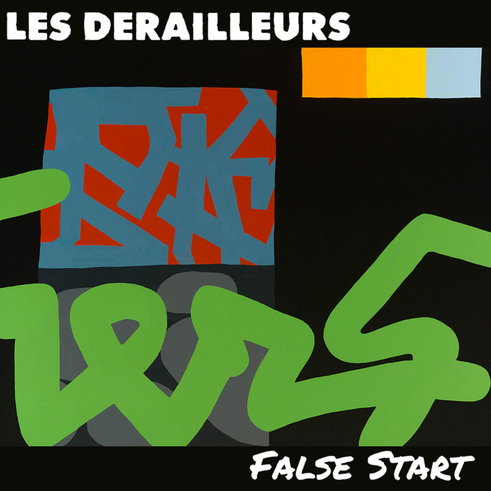
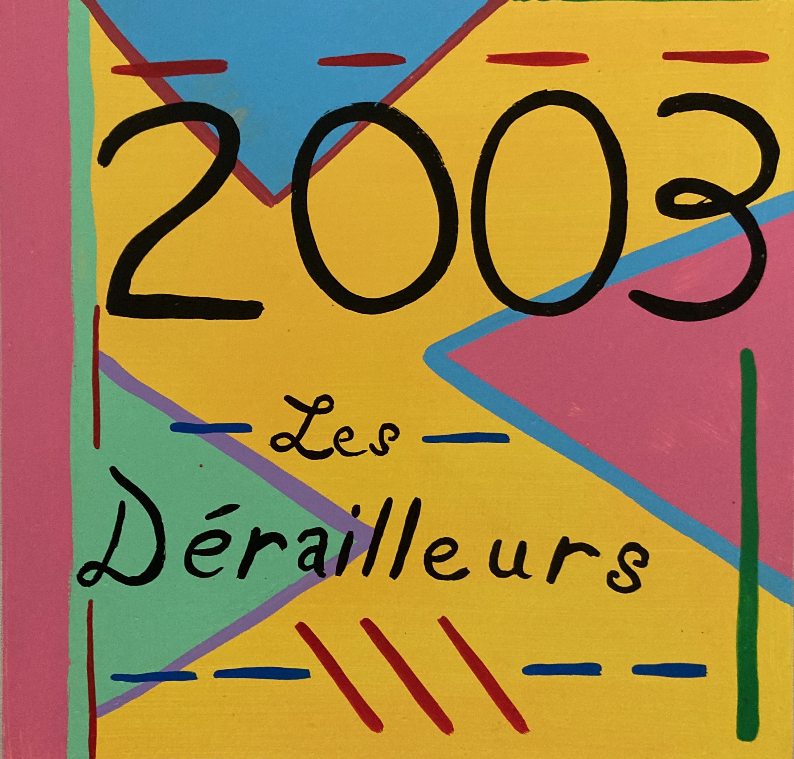
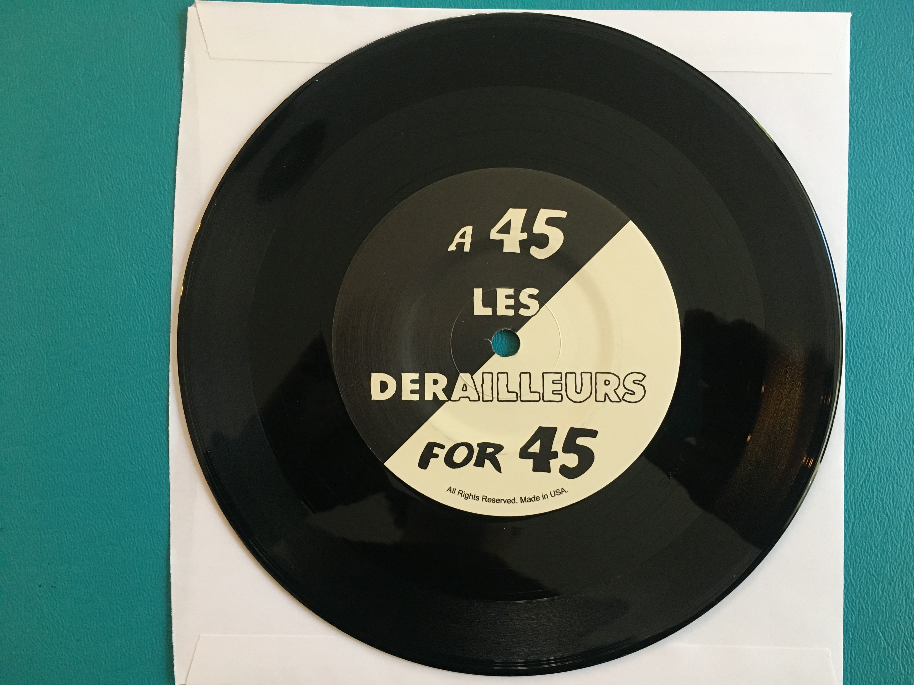

1. Cover
Music
Listen to the releases.
Les Dérailleurs have released two EPs, False Start and 2003, a single, "45 for 45," and have a full-length album due in fall 2026. The EPs can be directly streamed below, or from streaming services, including the ones linked below.

Release 1
False Start
See this blogpost for the story of how "Places" became a Spotify "hit".
2. Places
3. Adversary
4. Think of Something

Release 2
2003
See this blogpost for more information about how this EP came about.
1. The Body Falls in Line
2. Cover
3. Party
4. Under There
5. Work This Thing

Single